Operating Documentation
Direction 5181178-800, Rev# 16
BrightSpeed Select Service Methods Gen
Module Version 0.1, Version Date 11/25/10
Operating Documentation |
| Last Revised: | 25 April 2011 |
This LFC (Load from Cold) procedure applies to True-In-One console with Media Tower (5270510-10).
There are two types of media tower as followings:
Media Tower (5270510-10) only supports DVD-RAM disk without cartridge. Refer to this LFC procedure.
Media Tower (5270510-3) can support DVD-RAM disk with/without cartridge.
Refer to another LFC procedure via below linkage: LFC Procedure (09BW35.11 / 09HW30.4 / 10BW06.5 for system w/ DVD Drive 5270510-3)
This LFC (Load from Cold) procedure supports the following software revisions:
Table 1: Software Revision
| Software Collector (P/N) | Applicable System Type | OS Software Revision (P/N) | Apps Software Revision (P/N) | Class C software | Class M software |
| 5380493 | Discovery CT590 RT Optima CT580 (16 slice) BrightSpeed Elite BrightSpeed Elite Select BrightSpeed Edge Select BrightSpeed Excel Select | CTT 6.3.10 (5372915) | 09BW35.11 (5372914) | 5372916 | 5372917 |
| 5357076 | BrightSpeed Velocity | CTT 6.3.10 (5352277) | 09HW30.4 (5352509) | 5352989 | 5357125 |
| 5394085 | Discovery CT590 RT Optima CT580 | CTT 6.3.10 (5372915) | 10BW06.5 (5394084) | 5394088 | 5394087 |
| NOTE: | ONLY 09BW35.11+SP1.7 or higher version; 09HW30.4+SP3.0 or higher version and 10BW06.5+SP1.5 or higher version can support New Media Tower (5270510-10). |
| ||||
| The software should ONLY be loaded onto your CT-only True-In-One
console A bare DVD-RAM disk (without cartridge) shall be used with New Media Tower (5270510-10). | ||||
| ||||
| Do not load this software on a PET/CT system. Do not load this software on a non-TIO Operator Console. | ||||
Check system configuration by one of the following methods:
Open a Unix Shell and type one of the following:
check_config
- OR -
swhwinfo -all
Look at the Common Service Desktop Home Page.
Record Autovoice Volume control settings (<ALT-F3> by Toolchest, upper right corner).
Write down all of the system INFO information on the reconfig screens, including the network information (use the appropriate information sheet, found in Console Information Sheets ).
Verify and record specific system hardware configuration.
Open a shell and type the following:
{ctuser@hostname}cat /usr/g/config/INFO
Record screen information in Console Information Sheets.
For an example output, see Example Config/INFO Output.
If the console has Connect Pro installed, write down the information when you run installhisris so it can be entered on the new console when installing the Connect Pro option.
Close the Service Desktop window in the upper left corner of the screen.
If your system does NOT have “Exam Split” option, skip this section.
Perform these steps before powering down your current Operator Console:
Open a Unix Shell and type the following:
{ctuser@hostname} su -
Password: #bigguy
[root@hostname] ls -l ~ctuser/ves/.hesMode
| NOTE: | There are no spaces in the phrase ~ctuser/ves/.hesMode |
Examine the results.
If the results are similar to:
-rw-r--r-- 1 ctuser users 0 Apr 3 12:43
/usr/g/ctuser/ves/.hesMode
Then HES (Hard Exam Split) mode is configured.
If the results show ‘No such file or directory’, then VES (Virtual Exam Split) mode is configured.
Record Exam Split Mode (Hard or Virtual). This info will be used during the LFC Options Installation.
Close the Unix Shell
Save the Jedi Runtime parameters, refer to Software-> HV Subsystem Utilities-> JEDI Generator Tool for how to save them.
| ||||
| Potential for Loss of Patient Data. | ||||
| This procedure will overwrite existing data. | ||||
| Before performing this procedure, ensure that the Archive and Network Queues are empty of patient data. If they are not, DO NOT proceed until it can be verified that all patient data has been archived. |
| ||||
| After each reboot during the software install process, an 'Unrecognized X-Ray Tube' message will be displayed (as shown in Tube Install Certification Tool - Screens), until the tube identity has been selected and 'Flash Download' has also been performed. The same “unrecognized x-ray tube” message will also be displayed on the CSD Homepage, until the ID and flash download are done. | ||||
| ||||
| MOD unit shall be connected before LFC if exists. The MOD unit does not work if it's not connected during LFC. | ||||
| ||||
| Do NOT switch screens or run other programs while saving System State. Otherwise the GUI may “hang” while trying to close, and the System State will need to be saved again. | ||||
| NOTE: | New tasks are included in this SW release These task will generate data that needs to be saved to the system state DVD. Follow the save and restore procedures throughout this document precisely or valuable information may be lost. |
| ||||
Two “Save System State” DVD procedures must be performed:
| ||||
| NOTE: | The original “Save System State” will be used only if the customer wants to revert back to the original SW. |
Perform these steps before powering down your Console:
Insert the DVD-RAM into the Peripheral Tower DVD drive.
Select [Service Desktop].
If reloading software, select: [UTILITIES]. If upgrading from earlier version software, select: [PM].
Select [System State].
| NOTE: | System State Save may be under Utilities or PM. |
Select [ALL] to save all data.
Select [SAVE].
If applicable, select [OK] when the following message appears: System State Media Status: Please insert a DVD or MOD into the drive and press Save again.
| NOTE: | Successful completion is indicated by the message, Save/restore system state: completed successfully. |
When completed select [DISMISS].
IMPORTANT: Do NOT select [DISMISS] more than once. Doing so will result in the GUI becoming hung, and the System State will be unusable. Should this occur, Save System State again.
For the original DVD, label the DVD as “Linux System State Backup”.
Repeat Step 1-8, for the second “Save System State”, using a new DVD and label with the same SW release that is found on the Application DVD label.
Close the Service Desktop window in the upper left corner of the screen.
Sites performing the next sub-section should not remove the DVD-RAM from the Peripheral Tower DVD-RAM drive.
Use the procedures in this section to perform a LFC.
Open a Unix Shell and become root:
{ctuser@hostname} su -
Password:<password>
| NOTE: | If the Password has not been modified by the site and is not known, the correct course of action is to contact Local GE Service. |
To determine the Host Computer BIOS version, type the following:
{root@hostname} dmidecode | grep Ver
Authorized BIOS versions
Version: 786F5 v01.35 for xw8600
Ensure that the Host Computer BIOS version is shown above. If correct, skip the following step. If not correct, perform step 5.
If the Host BIOS version is not correct or if you suspect incorrect Host BIOS settings (changes specified by GE from default), follow the instruction below:
For TIO, see XW8600 Host PC BIOS Setup.
| NOTE: | Takes 20 minutes approximately to complete OS installation. |
| NOTE: | System State SAVE must be performed before shutting down apps (Application Software). |
Remove the Operator Console's front cover.
Remove the Hospital Backbone Ethernet cable from the Console Bulkhead Assembly, located at the rear of the Operator Console.
Insert the OS disk into the DVD-ROM drive on the Host Computer.
Select one of the following methods to re-power the Operator Console:
If Applications are up:
Select the [Shut Down] button.

Select [Restart] then [OK] to restart the system.

If Application Software is down, at the toolchest open a Unix Shell and type:
{ctuser@hostname} sync
{ctuser@hostname} sync
{ctuser@hostname} halt
The Operator Console monitor will display a System halted message when it is acceptable to power OFF the Operator Console.
Power OFF the Operator Console at the front panel switch.
Wait 30 seconds to allow the disk drive to settle; then power ON the Operator Console at the front panel switch.
As the computer restarts, the booting process messages appear. After the booting process completes, the boot: prompt appears.
At the boot prompt, type the following depending on system type:
GEHC2<Enter>
| NOTE: | Special install script for multi-language keyboard support
is no longer required for 09BW35.11 or later software. System Configuration
(reconfig) script and the new Linux OS supports multi-language keyboards. Typing GEHC will result in both scan and display being on one monitor and require a LFC. |
After the OS is loaded, a red button appears and displays [Reboot].
Remove the OS disk, when it ejects.
Press <ENTER> to reboot.
The Host Computer reboots.
| NOTE: | Do not insert the Application disk into the Host Computer until the system reboots and the [root@localhost] window appears, displaying the [root@localhost root]# prompt. |
After the Host Computer reboots, verify
that the window appears with the [root@localhost root]# prompt.
Insert System State DVD-RAM into host computer DVD drive
Copy INFO and scanRx.db files from DVD-RAM to "/" directory.
cp -p /mnt/cdrom/service_mod_data/system_state/INFO /
cp -p /mnt/cdrom/service_mod_data/system_state/scanRx.db /
Eject System State bare media from host computer drive
| NOTE: | Takes 40 minutes approximately to complete Application installation |
| ||||
| FAILURE TO INSTALL THE CORRECT APPLICATION SOFTWARE AND SELECT THE CORRECT SYSTEM DAS HARDWARE CONFIGURATION WILL RESULT IN SYSTEM DOWNTIME AND DCB CIRCUIT BOARD REPLACEMENT. (THIS FAILURE WILL OCCUR AFTER THE FLASH DOWNLOAD PROCEDURE FLASHES THE FIRMWARE.) | ||||
After the Host Computer reboots, verify that the window appears with the [root@localhost root]# prompt.
Insert the Application DVD into the DVD-ROM drive on the Host Computer.
After approximately 15 seconds a pop-up box appears:

| NOTE: | If the pop-up box Warning does not
appear after two minutes, type the following and wait approximately
one minute for the pop-up box to appear. mount /media/cdrom<Enter> /media/cdrom/autorun<Enter> |
Select [Run Command] to run / media / cdrom/ autorun..
After approximately 15 seconds, an Installation Utility window appears. (See illustration, below.)

Select [Load].
Select the System tab.
See example System Settings screen, below.
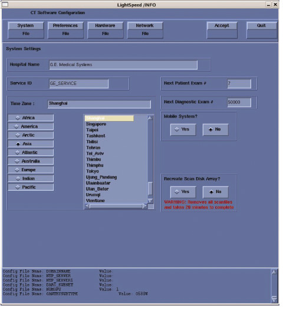
Verify that the Next Patient Exam # on the System Settings screen is the value restored from Save System State. Otherwise, set to 1.
Verify that the proper Time Zone is selected
Select/enter information as required for your system configuration.
Select the Preferences tab.
See the illustration below, for an example Preference Settings screen.

Select the units for patient weight.
Select Language: ([English] or [other]).
| NOTE: | To select additional 6 languages: Danish, Swedish, Finnish, Norwegian, Dutch or Brazilian Portuguese, please select [English] during LFC. After complete all LFC procedures, perform language selection again to preferred language. |
Select Preferred FastCal KV - select the kV to be calibrated during FastCal. These kVs should include all kVs that the site uses for patient scanning.
Select Target Noise Index Table.
(Default is Table 2.)
Verify proper Date Format is selected.
Verify proper Time Format is selected.
Select AutoVoice Language.
Verify Modified in Room Start is set to [Off]. Sites in Japan must be set to [On].
Set HIPAA Present to [OFF] unless the customer requests HIPAA to be ON.
Select the site preferred Dose Information Display option for the site to use in monitoring calculated Patient Dose (on view edit screen):
Select [ON] (full DOSE Display) or previous Customer setting.
| NOTE: | A scroll bar below this menu may be present. It contains the System Information from the INFO file System State. |
Select the site-preferred Dose Record option for the site. Default is [ON]. The dose information is saved in a DICOM structured report. The DICOM standard defines a new DICOM X-RAY Radiation SR SOP class, which the other systems must support. The Dose SR feature saves an exam’s dose information in this format.
ON = Saves the dose information in a DICOM Enhanced SR SOP Class.
OFF = Turns off the option.
FULL = Saves the dose information in a DICOM X-Ray Radiation Dose SR SOP Class.
Set Flip and Rotate to [OFF] as default. Configures the preference for allowing the Flip and Rotate feature to be turned on in the User Interface on the (Left) SCAN monitor. This preference allows the customer to apply custom orientation changes based on Exam Type and reconstructions methods on the DICOM images that will be transferred to PACS and related systems.
Select the Hardware tab. The Main Hardware screen appears.
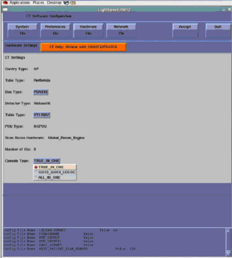
Click on the [Hardware Settings] (orange button) to access the Select hardware configuration screen. Below Illustration only show example for hardware configuration screen. Select the proper configuration for each system. See Table 2
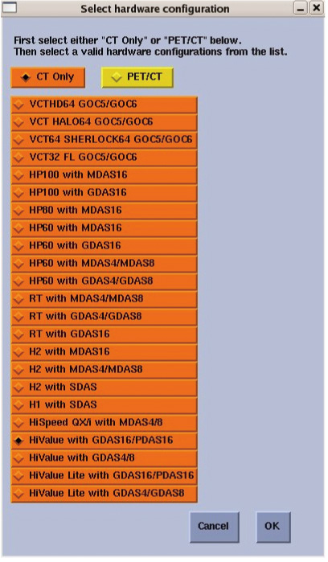
Table 2: System Reconfig Select List
| System Type | Select Hardware Config |
| BrightSpeed Elite | HiValue with GDAS16/PDAS16 |
| BrightSpeed Select Elite | HiValue Lite with GDAS16/PDAS16 |
| Discovery CT590RT Optima CT580 | RT with GDAS16 |
| NOTE: | FAILURE TO INSTALL THE CORRECT APPLICATION SOFTWARE AND SELECT THE CORRECT SYSTEM DAS HARDWARE CONFIGURATION WILL RESULT IN SYSTEM DOWNTIME AND DCB CIRCUIT BOARD REPLACEMENT. (THIS FAILURE WILL OCCUR AFTER THE FLASH DOWNLOAD PROCEDURE FLASHES THE FIRMWARE.) |
Click on the [CT ONLY]. then Select your System types HW Parameters, and select [OK].
Confirm and select Console Type. The screen with appear as below:
Confirm and select Table Type. The screen with appear as below:
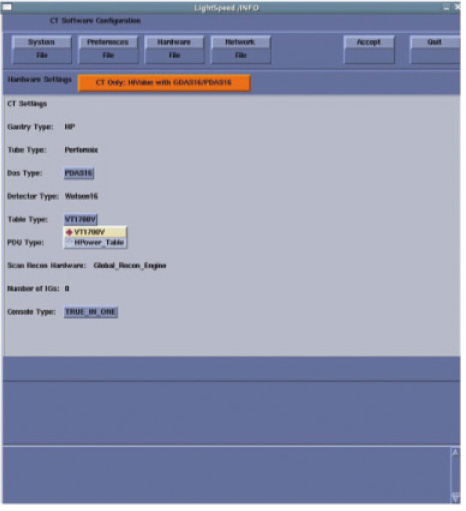
Confirm and select Das Type. The screen with appear as below:
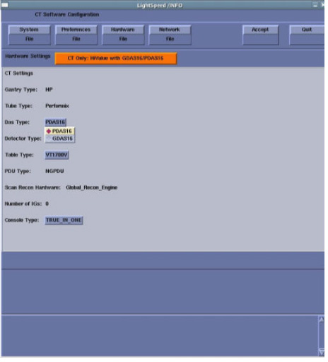
Select the Network tab.
See example Network Settings screen, below.

Configure Network Settings:
Suite Name - The Suite Name must utilize uppercase letters. It must start with a letter, followed by 3 alphanumeric characters. The total must be four characters long. It is suggested that you choose CT01 for the first scanner (CT02....), unless a different Suite Name is required.
Station Name - The Station Name identifies the text that is stored in the DICOM attribute “Station Name” (DICOM TAG 0008,1010) in all CT images created. Some PACS systems may use the Station Name attribute or system tracking for identification of the scanner where the CT images were generated. Typically, the Host Name and Station Name are the same.
| NOTE: | The Station Name defaults to the Host Name if it is left blank. If entered it:
|
Host Name
| NOTE: | The Host Name identifies the hostname
and AE Title of the scanner. It:
|
IP Address - Site supplied address.
| NOTE: | Perform below procedures if your customer Ethernet backbone begins with 10.0.1xx, OR if the scanner will connect to a device with an IP address of 10.0.1.xx. Below steps are not be applicable for Console without DARC |
If hospital backbone starts with 10.0.1.xx and this is the first time install, change the DARC subnet by checking the Change DARC subnet box, and fill in the following value: 169.254.0. Continue and complete the software load on the Host computer.
If hospital backbone starts with 10.0.1.xx, and the DARC subnet was already changed, verify that Change DARC subnet box is checked and a subnet is already filled. Continue and complete the software load on the Host computer.
If the DARC subnet was already changed and needs to be set to the 10.0.1 subnet, deselect the Change DARC subnet box. Continue and complete the software load on the Host computer.
Net Mask - Site supplied address.
| NOTE: | If the hospital backbone IP address is 192.9.220.xx, then the Net Mask must be set to 255.255.255.252. |
Broadcast Address - Site supplied address.
Default Gateway - Site supplied address.
| NOTE: | Make sure the <NUM LOCK> button on the keyboard is not active. If it is, deselect it to enable the [ACCEPT] button in the next step. Failure to deactivate the NUM LOCK results in load issues. |
If your customer has AW Direct Connect, then select Enable AW Direct Connect?. Complete the LFC, making certain to configure this feature in Section 3.10.3. (Do not configure AW Direct Connect now.)
If there is an Internal Option - Internal Subnet setting displayed and checked, then un-check it. (This option might not appear on your system.)
Verify with customer’s network administrator if they have NIS. If they do, ensure the Advanced Options and Use NIS? boxes are checked. If they don’t, ensure these selections are not checked.
Domain Name: add your name here (get name from customer’s network administrator).
Enter the IP Address of Internal Server: add your IP address here (get IP address from customer’s network administrator).
If your customer wants to synchronize the system time to their NTP server, then select Enable Network Time Protocol, and enter the Primary Server IP address.
At Enable TCP Segmentation Offload?, the default selection is On. In some situation, TCP Segmentation Offload can't work normally. Please select No at this time.
Select the [ACCEPT] button at the right corner of the User Interface.
An Install INFO pop-up box is displayed.
See the following illustration, for a typical Install INFO message (the Install INFO message is different for each system configuration).
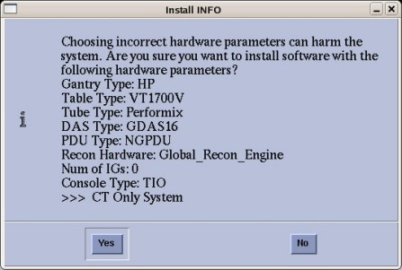
Select [yes], if correct, and wait for system to reboot.
| NOTE: | If the information is not correct, select the [NO] button. This returns you to the Hardware screen. Select the [Hardware Parameters Selection] button and select the correct system configuration from the displayed list. Select the [Accept] button again, followed by the [YES] button on the Install INFO pop-up to accept the new hardware configuration. |
The following pop-up message appears:
Please make sure the CT Application SW is in the drive - the system will be rebooted.
No action is required for this pop-up. The system will automatically reboot after approximately 10 seconds if the [OK] button is not selected.
| NOTE: | Do not remove the Apps DVD from the Host Computer until instructed to do so. |
As the system reboots, the following shell Installation screen appears and the application software starts loading.

When the system prompts you to reboot (after approximately 13 minutes), Select [Yes]. The system is going down for reboot NOW.

| NOTE: | During the reboot of the console, a message may appear to the effect that the system was not able to determine what the tube type was and to run the TIC tool. This message should be ignored at this point. |
After approximately 3 minutes, a pink pop-up box appears, stating CT Software Auto-Start Disabled. In this box, select [OK].

| NOTE: | Follow the next procedure, Do NOT type “startup” at this time |
Press the button on the DVD drive to remove the Apps DVD from the Host Computer.
Open a shell, remove /scanRx.db:
rm /scanRx.db
| NOTE: | If scanRx.db file still remains in “/” directory, Reconfig does not show correct information in next time. |
Confirm the Host Computer Software type. The software section of the version output should match example shown.
Open a Unix Shell and type the following to see software and hardware Config information:
{ctuser@hostname} cd /usr/g/bin
{ctuser@hostname} swhwinfo
09BW35.x.<hardware revision info here>
Example: 09BW35.5.WB_H_G16_G_GTL650
Confirm that the swhwinfo results match the software revision shown on the Applications Disk.
If the revisions match, continue with this procedure.
If the revisions do NOT match, reload the software (Section 3.2).
Type: cat /GEHC*
Release: GEHC/CTT Linux 6.3.10
Built: Tue Mar 24 10:40:25 CDT 2009
Confirm that the cat result matches the Operating System version shown on the OS disk.
Close the Unix Shell.
You must set the date and time on the Host Computer with Application Software down.
Open a Unix Shell and log in as root:
{ctuser@hostname}su -
Password: #bigguy
Set date and time. Type the following:
{root@hostname}# setdate <Enter>, to be prompted through the individual entries. Where:
Note: Type “q” to quit anytime. Enter to proceed:
Note: TO BE ACCURATE, this tool will prompt you to enter the “Second”. Watch your clock or PC carefully to enter the proper value, and hit [Enter] at the right second to set the accurate time. Enter to proceed:
Enter the current Year (1980-2030) [2010]:
Enter the current Month (1-12) [04]:
Enter the current Day (1-30) [14]:
Enter the current Hour (Military Time) (0-23) [18]: 15
Enter the current Minute (0-59) [13]: 18
Enter the current Second (0-59) [00]: 10
Updating the time on the OC, Please Wait...
Upon completing either of the above commands, the user will receive the following responses:
Current OC date : Fri Apr 14 16:14:05 CDT 2010
[root@hostname]#
setdate completed with NO ERRORS.
Type:
[root@hostname]# shutdown -y -g0 << this is a “zero”, not an “oh”
Turn OFF the Operator Console power at the front switch.
Wait ten (10) seconds, then turn ON the Operator Console power at the front switch.
Open a Unix Shell and type the {ctuser@hostname}startup
Application will be started up automatically.
A pink pop-up Attention Message appears: OC initializing. Please wait….
| NOTE: | If a message concerning incorrect DAS configuration is encountered, review the Error Log for the Card List issue. Select from the following two methods to alleviate this issue: Flash Download Update or Power OFF the Axial Drive and HVDC at the Gantry service panel - turn OFF DAS Power for 1 minute - turn DAS Power back ON - turn Axial Drive and HVDC at the Gantry service panel back ON - Flash Download Update - verify error message has disappeared. If error message reappears then troubleshoot the DAS/DCB. |
Select [OK] for other pink message boxes that appear throughout the reboot process.
After each reboot during the software load process, an 'Unrecognized X-Ray Tube' message will be displayed (as shown below) until the tube identity has been selected (later in this procedure) and 'Flash Download' has also been performed.

If any Recon Selftest Failures are encountered, review the error log. Make certain to note the errors for troubleshooting after the LFC.
| NOTE: | Before install any Service Pack or Patch, please confirm that the Service pack/patch version matches the Application Software version. |
| NOTE: | Retain the earlier version of the Service Pack CDs in case a site is required to uninstall the latest version of Service Pack and install the previous Service Pack. |
| NOTE: | If Service Pack questions arise, contact Local GE Service. |
Open a Unix Shell.
If Application software is up, perform{ctuser@hostname}cleanMon.
In the Unix Shell, become root:
{ctuser@hostname} su -
Password:<password>
| NOTE: | If the Password has not been modified by the site and is not known, contact Local GE Service. |
Perform the following steps to install the Service Pack CD:
[root@hostname]#start_udev
A message will return: OK
Wait 15 seconds after the OK is returned, then type the following install script:
[root@hostname]#patch_install -c
| NOTE: | If the Service Pack fails to install, perform [root@hostname]#start_udev. Wait 15 seconds after OK, then retry the Service Pack. |
Any patches on the Service Pack CD will be listed. Before installation of each patch, the window will wait for user's confirmation as follows:
I will install update Patch Name, is this ok ? [y/n]
Input y to install this patch.
| NOTE: | Service Pack CDs will include any new patches and all older patches that are still applicable. Load all the patches included in the latest Service Pack CD. |
After installing the Service Pack CD, type patch_status (Class M service key inserted is required to use this command) in the Shell window to determine which Service Pack patches were installed (if any). The following is an alternate command to verify the Service Pack load:
[root@hostname]#showprods | grep -i ServicePack
Type:[root@hostname]#reboot
| NOTE: | A reboot is always required after a patch is installed. Additional processes may be required for installing certain Service Pack media. Refer to the instructions sent with the Service Pack. |
| ||||
| For Perfusion and Denta Scan: If you loaded software in a language other than English, please reconfig, changing the language to English, to load these two options. Otherwise, the LFC procedure may fail. | ||||
| ||||
| Options must be loaded before Protocols. | ||||
| NOTE: | If performing a Load From Cold (LFC) for the first time
and Software Option Licenses plus site-specific configuration has
not been saved to System State, Software Options will need to be loaded
manually.
|
Insert the Options DVD in the Peripheral Tower DVD-RAM drive.
With the Applications up, select the [SERVICE DESKTOP].
Select [CONFIGURATION].
Select [INSTALL OPTIONS]. A blank Software Options screen appears:

Select [INSTALL]. A Select Mechanism window opens (see illustration, below). Select the mechanism through which you want to install Option Keys.
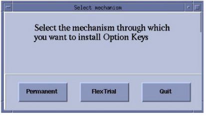
Select [Permanent]. A Select Device window opens (see illustration, below). Select the mechanism through which you want to install the Permanent Option Keys.
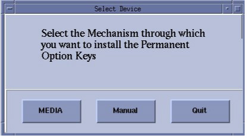
Select the [MEDIA] button and insert the Options DVD or MOD. Available options appear on the Software Options screen.

Perform the following Option installations, if applicable:
| NOTE: | The order of installation is critical. |
VolumeViewer
CardIQ2
CardEP
Connect pro (enable pps)
Exam Split (VES)
Pick remaining options one at a time from the Available Options list and select [INSTALL] to update each selection and place it on the Installed Options List.
When the process is complete, select [Quit] then quit to close the window.
| NOTE: | After Select [Quit], please wait for 5 minutes before perform any other operation. |
| NOTE: | Restart Application to Restore System State |
Open a Unix Shell and verify the Peripheral Tower MOD and DVD are present:
{ctuser@hostname} scsistat
Close the Unix Shell.
Insert the Save System State DVD into DVD-RAM Peripheral Tower drive.
Select the SERVICE icon.
Select: [UTILITIES]
Select: [SYSTEM STATE]
Select [ALL]
Select [RESTORE]
Verify the overall system state content has restored correctly (look for message “Save/Restore System State Completed Successfully”), then select [CANCEL].
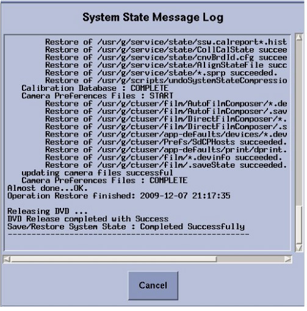
When completed, select [DISMISS] or close the window.
| NOTE: | If Scan Hardware Reset question appears - answer [NO]. This reset is performed during FLASH Download Update. |
| NOTE: | The Flash Download takes anywhere from 5-30 minutes, depending on which subsystems require updates. |
Before running the Flash Download Tool, verify the reset switch at the gantry is not flashing and reset the 120 VAC, if necessary. Also, try to ping the following (press <Ctrl-C> and close the shell when finished pinging), to see if there are any issues:
ping orp
ping tgp
Select the [SERVICE DESKTOP].
Select in sequence: UTILITIES → FLASH DOWNLOAD.
Select [UPDATE]. Ignore any initial errors.
When the pop-up shown below appears, enter the Collimator Serial Number, and select [Accept].
| NOTE: | This pop up may not appear if the Collimator Serial Number was retrieved from the System State. If the pop up does not appear, go to step 7. |

When the pop-up shown below appears, select [Yes], to save the CCB file.

When then Flash Download process is complete, select [DISMISS] or close the window.
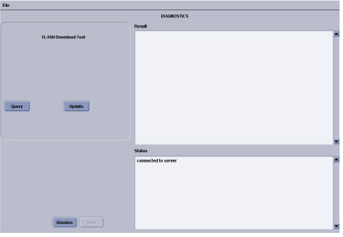
| NOTE: | After Flash Download the system will report the following
message: The entire Generator database has been reset. You may now restore JEDI runtime parameters. Filament calibration is required before scanning patients. If you are reloading software, this message may not appear. If you get this message, you must perform a Filament Calibration, because the JEDI database was reset. |
Confirm that Service Pack is installed before perform the following steps:
Shutdown Application, then Open a Unix Shell.
{ctuser@hostname}su -
Password: #bigguy
Type reconfig.
Click [config].
After System Reboot, Startup Application.
If HIPAA is turned ON, then configure it now. (Refer to HIPAA Configuration) When HIPAA configuration is complete, return to this procedure.
For general information on Product Network Filters, please see Product Network Filter Theory.
If your customer has special network requirements, then proceed to Configure Product Network Filters now. When PNF configuration is complete, return to this procedure.
| NOTE: | If network problems arise after configuring PNF:
|
If the site requires the configuration of AW Direct Connect, then configure it now (see AW Direct Connect). When configuration is complete, return to this procedure.
| ||||
|
(For Scanners with GE Tubes)
If the software
is installed by a non-GE person or the GE field engineer does not
have a service key, a GE Field Engineer is required On-Site within
30 days, to perform the verification portion of this procedure. This
verification cannot be done by non-GE employees. If a GE Service employee
is not currently on site, please contact your GE Healthcare representative
to arrange a visit. This section is absolutely critical to perform. Failure to do so will result in nuisance pop-ups to the customer, tube performance may decrease and certain scanner features may not be usable. | ||||
Follow the procedure shown in the Flowchart below.
Verification that a tube is a GE Healthcare tube (called “GE Tube” in the TIC tool) can be done by visually checking the Manufacturer Name, which can be found on the tube rating plate.
If you are installing a GE brand tube, click [GE MEDICAL SYSTEM TUBE]
If rating plate does not identify the tube as a GE brand tube, click [ALL OTHERS]
| NOTE: | Some Advanced features may be disabled and pop-up warnings will be activated |
| NOTE: | Do not double-click the Tube Certification Tool. This will cause more than one tool window to be displayed; one with message ‘service key information not available’. If this happens, close the window and try again. If this happens more than once, reboot system and try again. |
Illustration 1: Selection of Tube Identity
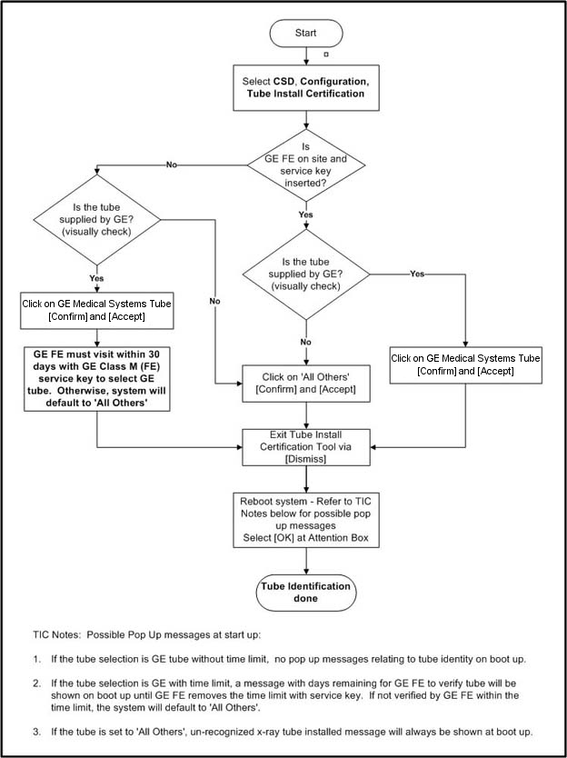
Flowchart Note:
Possible pop-up messages at start-up:
If the tube selection is GE tube without time limit, no pop-up messages relating to tube identity on boot up.
If the tube selection is GE with time limit, a message with days remaining for GE FE to verify tube will be shown on boot up until GE FE removes the time limit with service key. If not verified by GE FE within the time limit, the system will default to 'All Others'.
If the tube is set to 'All Others', unrecognized x-ray tube installed message will always be shown at boot up.
Please refer to Tube Install Certification Tool - Screens for examples of the screens displayed by the Tube Install Certification Tool.
| ||||
| NEVER Use [CTRL - ALT - DELETE] to reboot the host computer. This technique will NOT reboot all console subsystems, and as such is an unacceptable practice. | ||||
To restart the system:
Replace the Hospital Backbone Ethernet cable to the Console Bulkhead Assembly (located at the rear of the Operator Console).
Open a Unix shell and type the following:
{ctuser@hostname} sync
{ctuser@hostname} sync
{ctuser@hostname} reboot
When the system comes up the following screen will be displayed if HIPAA Present was set to On during the LOAD process. Verify the admin screen below has the following 'Select user':
Select user: root
Password: #bigguy
For XW8600 Host Computer (TIO with xw8600)
Autovoice Settings
If the Autovoice setting is equal to 85 (i.e. factory default setting), then do not perform volume adjustment. If the Autovoice setting is higher or lower than 85, then it is recommended to perform volume adjustment.
Volume Adjustment
Select the “Autovoice Volume” (“audioSetting”) tool from the Tool Chest menu to increase the volume as needed.
Click [Save], then [OK].
Insert the Save System State DVD into the Peripheral Tower DVD-RAM drive.
Select [Service] icon.
Select [Utilities] then [System State].
Select [All] to select all the cals, characterizations, etc.
Select [Save].
Select [Yes].
When completed select [Cancel] then [DISMISS].
Close the Service Desktop window in the upper left corner of the screen.
| NOTE: | Load any applicable software FMIs (software patches) prior to performing system sanity scans. |
Successfully perform a Scout scan.
Successfully perform a Helical scan.
Successfully perform an Axial scan.
If have DICOM print configured, perform DICOM print to confirm network operation (Product Network Filter (PNF) setup).
If have archive server configured, perform image archive & retrieve to confirm network operation (PNF setup).
Software Load Process is now complete.
The Reconstruction (not Scan) portion of the system can be tested at this point.
When Application Software is up, perform the following:
Select [Recon Management], and select [Restart Queue] if not in the Idle Mode.
Select [RETRO RECON] on the left Monitor.
Select the rat gold series.
Select [SELECT SERIES].
Select [CONFIRM].
Verify the image(s) reconstruct and are displayed.
Remove Rat Gold generated images via Image Works.
Select [QUIT].
| NOTE: | only applicable with the Service security key |
Select the Service Icon.
Select [Diagnostics].
Select [Recon Data Path].
Verify it is set to 1 and ALL.
Select [Run].
Verify Recon Data Path tests pass.
Select [Dismiss] or close the GUI.
Perform FastCal as required.
Remove the System State DVD-RAM from the Peripheral Tower.
Replace the front and rear Operator Console covers.
Save System State:
Insert the Save System State DVD into the DVD tower drive.
Select: [SERVICE DESKTOP]
If reloading software, select: [UTILITIES]
Select: [SYSTEM STATE]
Select [ALL] to select all the cals, characterizations, etc.
Select [SAVE].
If applicable, select [OK] when the following message appears: System State Media Status: Please insert a DVD or MOD into the drive and press Save again.
When completed select [DISMISS].
Save all reformat / recon protocols.
Close the Service Desktop window in the upper left corner of the screen.
Sites performing the next sub-section should not remove the DVD from the Peripheral Tower DVD-RAM drive.